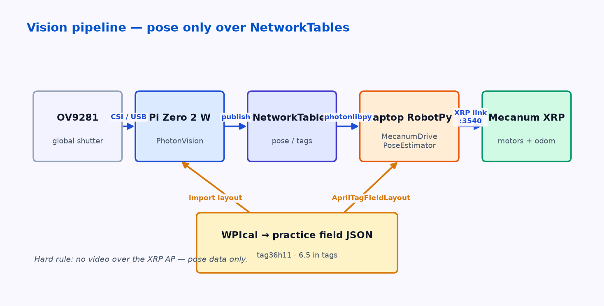

Draft, rewritten Nov 3 2026. One path: Pi Zero 2 W + OV9281 → PhotonVision → NetworkTables → laptop (RobotPy sim --xrp) → Mecanum XRP.
Architecture

- Capture & detect on the Pi (PhotonVision).
- Fuse & drive on the laptop (
MecanumDrivePoseEstimator+photonlibpy). - The XRP never sees video frames.
Hardware
| Piece | Choice |
|---|---|
| Coprocessor | Pi Zero 2 W (on hand) |
| Camera | XuBo / Arducam OV9281 global shutter |
| Power for Pi | Separate 5 V / ≥2 A USB power bank — not the XRP AA pack |
| Robot | Mecanum XRP — xrp.html |
PhotonVision setup (Pi)
- Flash a PhotonVision image for the Pi; boot and open the web UI.
- Add the OV9281 camera; enable 3D and AprilTag tag36h11 (PhotonVision hardcodes 6.5 in tag size).
- Calibrate the camera in PhotonVision.
- Optional MultiTag: enable Do Multi-Target Estimation after a field layout is imported (Settings → Device Control → Import Settings → AprilTag Layout). Docs: PhotonVision MultiTag.
NetworkTables path
Preferred lab pattern (matches how we already drive the XRP):
- Laptop joins the XRP AP (
XRP-<id>/xrp-wpilib) or all three join a lab router. - Pi runs PhotonVision and publishes vision topics.
- Laptop RobotPy code uses photonlibpy to read poses and calls
MecanumDrivePoseEstimator.addVisionMeasurement. - Laptop sends motor commands to the XRP (
HALSIMXRP_HOST=192.168.42.1, port 3540).
Hard rules
- Publish pose / tag data only — never raw video over the XRP AP (few client slots, 2.4 GHz).
- Keep the Pi on its own power bank.
robotpy sketch (laptop)
from photonlibpy import PhotonCamera
from photonlibpy.photonPoseEstimator import PhotonPoseEstimator, PoseStrategy
from robotpy_apriltag import AprilTagFieldLayout
from wpimath.geometry import Transform3d
cam = PhotonCamera("ov9281")
layout = AprilTagFieldLayout("practice-field.json") # custom layout file
est = PhotonPoseEstimator(
layout,
PoseStrategy.MULTI_TAG_PNP_ON_COPROCESSOR,
cam,
Transform3d(), # robotToCamera — measure and fill in
)
# each loop:
result = est.update()
if result and result.estimatedPose:
pose_est.addVisionMeasurement(
result.estimatedPose.toPose2d(),
result.timestampSeconds,
)
Install with requires = ["photonlibpy"] in pyproject.toml (see xrp.html).
Custom practice field (AprilTag layout)
We need a small practice field of tag36h11 / 6.5 in tags — not the full competition layout.
Official tool: WPIcal
WPIcal is the WPILib tool for measuring AprilTag poses from video and exporting:
- a WPILib field-layout JSON (for robot code /
AprilTagFieldLayout), and - a
.fmap(for some coprocessors).
Launch from VS Code: WPILib Command Palette → Start Tool → WPIcal. It accepts custom layouts as well as season layouts. Import the JSON into PhotonVision as an AprilTag Layout.
You can also author a layout JSON by hand (tags + field.length / field.width in meters; FRC NWU coordinates) and load it with AprilTagFieldLayout("/path/to/practice-field.json").
Flag — which “new AprilTag app”?
Paul asked for the new AprilTag app to build the field. Closest official match is WPIcal. Other recent options, if that isn’t what was meant:
| Tool | What it is | Source |
|---|---|---|
| WPIcal | Official WPILib field calibration → JSON + .fmap |
docs.wpilib.org …/wpical |
| PractiCal | iPhone TestFlight app (Team 3322, Jan 2026) → WPILib JSON | Chief Delphi thread |
| Limelight Map Builder | Browser editor → .fmap (Limelight-centric) |
tools.limelightvision.io/map-builder |
Confirm with Paul which app to standardize on. Until then, document WPIcal + hand-written JSON.
Checklist
- Pi boots PhotonVision; OV9281 stream visible in the UI.
- Detect a printed tag36h11 (6.5 in) at ~1–2 m.
- Laptop
photonlibpyreceives a pose (Field2d or print). - Import a practice-field JSON; MultiTag estimate looks sane.
addVisionMeasurementmoves the Mecanum pose estimate when a tag is in view.
Future note
FPGA (EPM11 / Tang) streams are out of scope for this page. Revisit after the PhotonVision baseline is solid.